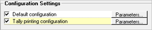

This feature is used to configure printing for all transactions/ nodes (terminals).
How to reach: Setup > General > Print Engine Configuration
The Print Engine Configuration window is as shown.

Select Transaction
All Transactions: To configure all transactions.
Configure Specific Transaction: To configure any specific transaction (individually). Click here to view details.
On selecting a specific transaction for configuration, an option to configure Tally Printing is displayed under Configuration Settings.

Click Parameters against Tally printing configuration.
Exclude Transactions with different configuration: Selected by default, to exclude all the transactions with different configuration.
Printing Options: Options are provided to continue printing or to stop.
Turn ON: To enable the printing
Turn OFF: To disable the printing
Prompt while printing: To display a prompt before printing the selected transaction/ node
Configuration Settings
By default, the default configuration is selected.
Note: To configure separate settings for transactions/ terminals, you need to create a new configuration setting and link that to a transaction/ terminal. Shoper administrator privilege is required to create new configuration setting.
Parameters: To define the parameter values for the selected configuration. Click here to view details.
The configuration setting options are visible to users with Shoper administrator privilege only.
The Print Engine Configuration window with Terminals and Advanced Options is as shown.

Terminal(s)
This feature is available for an user with admin rights and only if there is more than one terminal/ node configured.
All Terminals: To configure all terminals.
Configure Specific Terminal: To configure specific terminal. Click here to view details.
Exclude terminals having different configuration: Selected by default, to exclude all the terminals with different configuration.
Note: The Terminal-wise configuration setting options are visible to user with admin rights and if there are more than one Shoper node (terminal).
Advance Options: Enabled for user with admin rights.
The following options are activated on selection of Advance Options.
New: To create new configuration
The Create New Configuration window is as shown.

Specify Configuration Caption: Enter the caption for the configuration.
Renderer: Select the caption of the renderer from the list containing both the default and customised renderers. By default, the first renderer in the list is the Shoper default renderer.
Note: A renderer is a customized dll where a programmer can write customization code in DOTNET C# language. The renderer /DLL can contain the business logic, layout details of stationary, etc.
Add: To add a customised renderer. Click here to view details.
Edit: To edit the settings of the existing renderer. The default renderer cannot be modified/ edited.
Delete: To delete an existing renderer. The default renderer cannot be deleted.
The Print Engine Configuration window with more than one configuration setting is as shown.

Modify: To modify the settings. The default renderer cannot be modified. Only the highlighted configuration is modified.
Delete: To delete configurations. The default configuration setting cannot be deleted.
Note: By default, all Configuration Settings are selected.